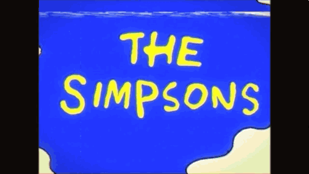

Simpsonit
Lyhyt Kuvaus:
Sarjassa kuvataan satiirisella tavalla Simpsonin perheen Homerin, Margen, Bartin, Lisan ja Maggien elämää. Perhe seikkailee kuvitteellisessa Springfieldin kaupungissa. Jaksoissa on runsaasti viittauksia amerikkalaiseen populaarikulttuuriin, politiikkaan ja muihin ajankohtaisiin ilmiöihin sekä amerikkalaisen yhteiskunnan ongelmiin.
Sarjan tapahtumapaikkana toimii yhdysvaltalainen kuvitteellinen Springfieldin kaupunki. Tapahtumat keskittyvät Simpsoneiden kotiin 742 Evergreen Terracelle, Springfieldin ala-asteelle, Moen kapakkaan, sekä Springfieldin ydinvoimalaan. Springfieldin maisemaan kuuluu rannikkoa, aavikkoa, maaseutua ja korkeita vuorenhuippuja. Groening itse on kertonut kaupungin sisältävän samankaltaisuuksia Oregonin Portlandiin, kaupunkiin, jossa hän kasvoi. Kaupungin nimeksi valittiin Springfield sen yleisyyden vuoksi.
Arvosteluja:
-
Tim Goodman – San Francisco Chronicle
Arvostelu:
"Maybe a warm, fuzzy remembrance would be the way to commemorate 'The Simpsons' as it nears its 300th episode. But no, such a fluffy tribute wouldn't do justice to 'The Simpsons,' which is — how to say this with the proper emphasis? — the best television show ever. Period."
Arvosana:
Ei Annettu
Linkki Arvosteluun -
Bryce Wilson – CinemaBlend
Arvostelu:
"I’m a huge fan of The Simpsons. I’ve been watching since the very first Christmas special and have followed the show faithfully ever since. This season has no weak episodes. Not one joke falls flat, no emotion feels forced, and no moment seems dated. Ladies and gentlemen, The Simpsons have reached perfection."
Arvosana:
5/5
Linkki Arvosteluun -
Andy Patrizio – IGN
Arvostelu:
"There's no need to tell you how brilliant this season was. The show is a pop-culture juggernaut, and when it's at its best — like in this season — it combines wicked satire with heart and cultural insight. It was the pinnacle of what an animated series could be."
Arvosana:
10/10
Linkki Arvosteluun -
Arvostelu:
"The Simpsons premiered on Fox in 1989 when prime-time TV comedy was dominated by saccharine family sitcoms. The show presented a sharp subversive contrast, receiving critical acclaim for its wit and resonating with viewers. The dysfunctional but lovable family quickly cemented its place in pop culture history."
Arvosana:
Ei Annettu
Linkki Arvosteluun -
James Plath – Movie Metropolis
Arvostelu:
"The first seasons of The Simpsons are pure genius. The writing is sharp, the cultural references are endless, and the characters feel both real and absurd at the same time. Watching these early episodes again, I’m reminded of how revolutionary the series really was."
Arvosana:
4.5/5
Linkki Arvosteluun